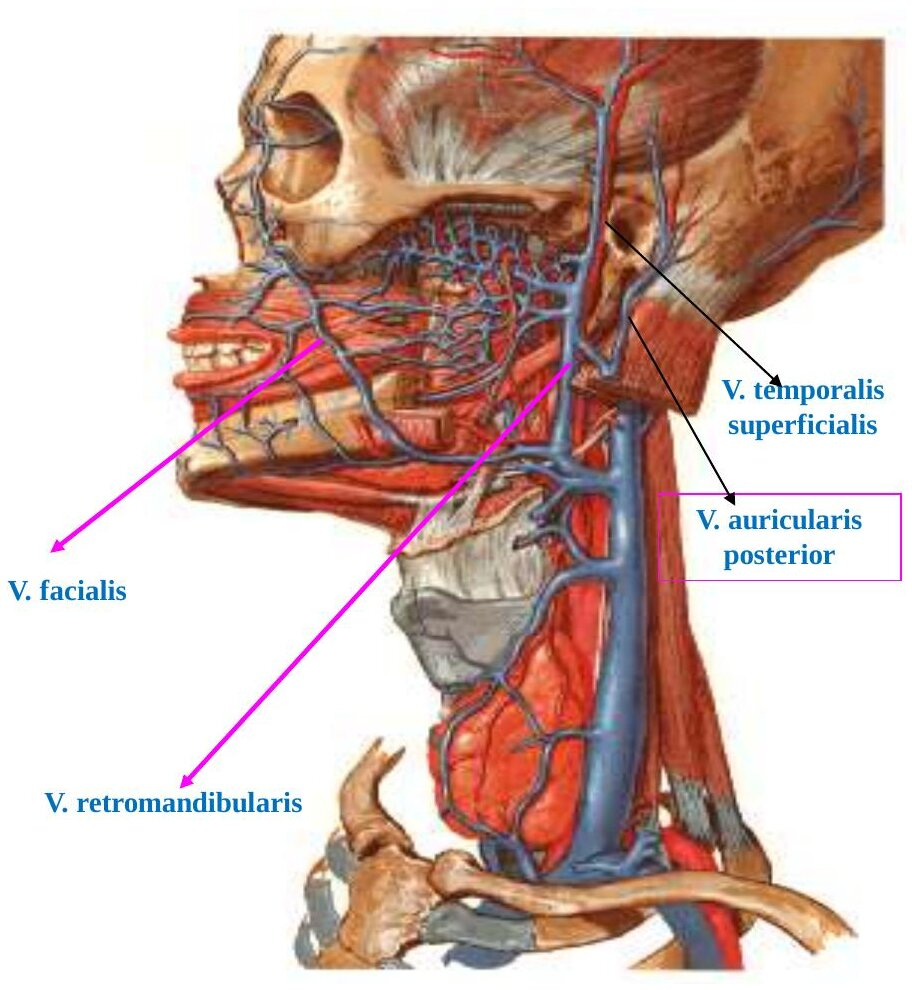
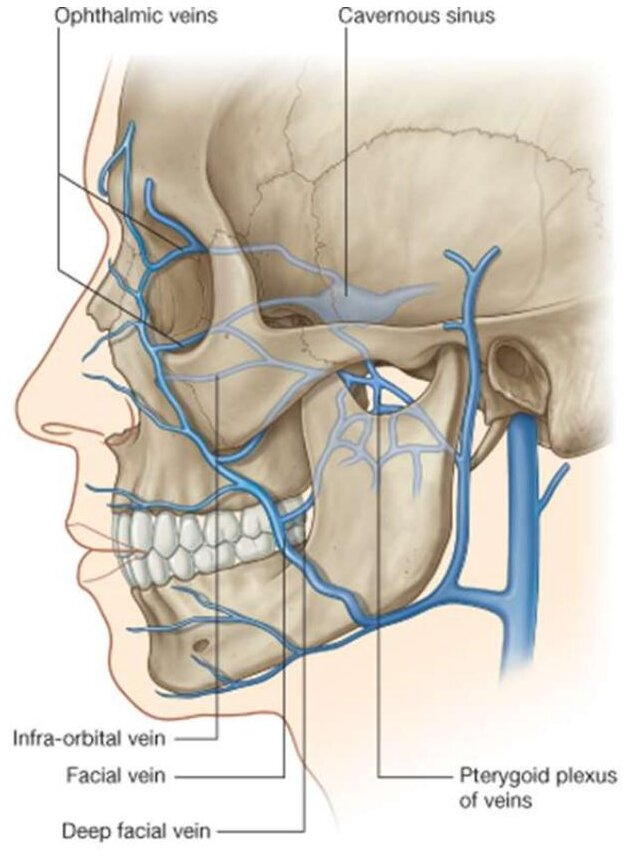
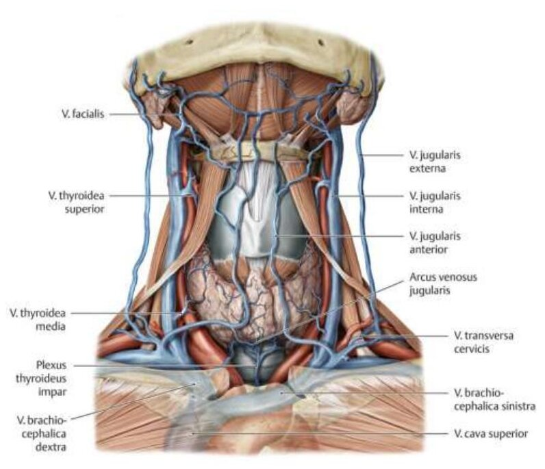
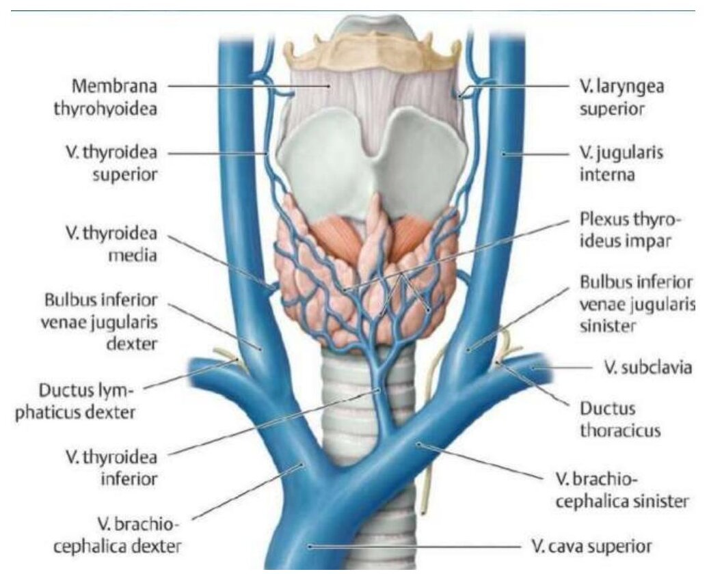
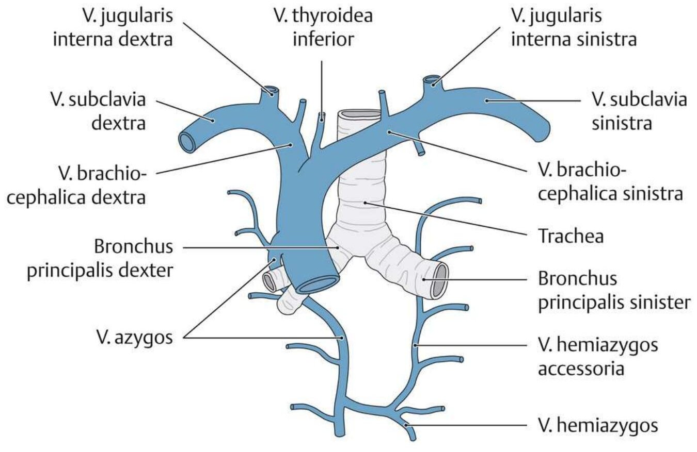
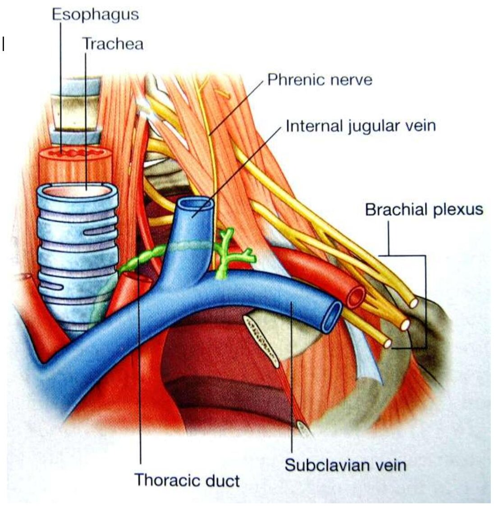

Bölüm 9 · Venae capitis et colli
Baş ve boyundan dönen kan sonunda iki büyük vende, v. jugularis interna ve externa'da toplanır, köprücük kemiğinin arkasında kol veniyle birleşir ve v. cava superior ile kalbe döner. Bu bölüm bu yolu yüzün küçük venlerinden başlayarak kalbe kadar izler. Yolun en önemli dersi ise baş venlerinin kapaksız olmasıdır: yüzün yüzeyel venleri ile kafa içindeki venöz sinüsler arasındaki bağlantılarda kan iki yönde akabilir ve yüzdeki bir enfeksiyon beyne taşınabilir.
Başın venöz kanı iki sistemle toplanır. Kafa içindeki kan (beyin, meninksler, göz) dura mater'in iki yaprağı arasındaki venöz sinüslerde toplanır ve sinus sigmoideus aracılığıyla foramen jugulare'de v. jugularis interna'ya dökülür. Kafa dışındaki kan (yüz, saçlı deri, çiğneme bölgesi) yüzeyel ve derin yüz venleriyle v. jugularis interna ve externa'ya gider. İki sistem birbirinden ayrı değildir: göz venleri (vv. ophthalmicae), kafatasını delen küçük emissarium venleri (vv. emissariae) ve kemik içindeki diploik venler iki sistemi her noktada bağlar. Bu bağlantıların hiçbirinde işlevsel kapak bulunmaz. Kan basınç farkının yönüne göre içeri ya da dışarı akar (Şekil 9.1).
Sunuma göre yüzün yüzeyel venleri dörttür: v. facialis, v. temporalis superficialis, v. auricularis posterior ve v. retromandibularis. Bu venler v. jugularis interna ve v. jugularis externa'ya açılır.
V. facialis yüzün ana venidir. Gözün iç köşesinde v. angularis olarak başlar. V. angularis, alnın ve saçlı derinin ön kısmının kanını toplayan v. supratrochlearis (sunumda v. frontalis) ile orbitanın tavanının kanını toplayan v. supraorbitalis'in burun kökünde (radix nasi) birleşmesiyle oluşur. Ona göz kapaklarının venleri (vv. palpebrales superiores ve inferiores) ve burnun dış venleri (vv. nasales externae) açılır. V. facialis buradan aşağı ve dışa, a. facialis'in arkasından ve ondan çok daha düz bir seyirle iner, mandibulanın alt kenarını m. masseter'in ön kenarında çaprazlar. Sunumdaki dallarına göre şu venleri alır:
Mandibulanın altında v. facialis, v. retromandibularis'in ön dalıyla birleşir (birleşik gövdeye v. facialis communis da denir) ve hyoid kemik düzeyinde v. jugularis interna'ya açılır.
V. temporalis superficialis regio temporalis ve regio parietalis'i örten saçlı derinin kanını toplar. Önde v. supratrochlearis ve v. supraorbitalis, arkada v. auricularis posterior ve v. occipitalis ile anastomoz yapar. Ona v. temporalis media (şakak), v. transversa faciei (arcus zygomaticus'un altında ona paralel uzanır) ve v. auricularis anterior (kulak kepçesinin önü) açılır. Aşağı inerken parotis bezinin içine girer ve bez içinde v. maxillaris ile birleşerek v. retromandibularis'i oluşturur.
V. retromandibularis parotis bezinin içinde, mandibulanın arkasında aşağı iner ve bezin alt ucunda iki dala ayrılır. Ön dalı v. facialis ile birleşir. Arka dalı v. auricularis posterior ile birleşerek v. jugularis externa'yı oluşturur. V. auricularis posterior regio mastoidea'yı örten saçlı derinin kanını toplar ve kulağın arkasından iner.
V. occipitalis ense bölgesinin saçlı derisinin kanını toplar, v. auricularis posterior ve v. temporalis superficialis ile anastomoz yapar ve v. jugularis interna'ya ya da externa'ya açılabilir. Kafa içiyle üç bağlantısı vardır: v. emissaria parietalis sinus sagittalis superior'a, v. emissaria mastoidea sinus transversus'a (sigmoideus'a), v. diploica occipitalis confluens sinuum'a bağlanır. Saçlı derinin enfeksiyonlarının kafa içine yayılması da bu bağlantılar yoluyla olur.


Plexus venosus pterygoideus çiğneme bölgesinin derininde, m. pterygoideus lateralis'in çevresinde ve kasın liflerinin arasında yer alan yoğun bir ven ağıdır. Sunumda fossa pterygopalatina'da oluştuğu yazar. Ağın büyük kısmı fossa infratemporalis'tedir ve fossa pterygopalatina'ya uzanır. A. maxillaris'in dallarına karşılık gelen venler bu ağa açılır: v. meningea media, vv. temporales profundae, v. masseterica, v. buccalis, v. alveolaris superior posterior, v. palatina descendens, v. infraorbitalis ve vv. pharyngeae. Ağın arka ucu, a. maxillaris'in karşılığı olan kısa v. maxillaris'e açılır. Bu ven collum mandibulae'nin arkasında parotis bezine girer ve v. temporalis superficialis ile v. retromandibularis'i oluşturur. Ağın kanı böylece v. jugularis externa'ya ve v. facialis yoluyla v. jugularis interna'ya gider.
Plexus pterygoideus kafa içiyle birçok yoldan bağlantılıdır: v. ophthalmica inferior aracılığıyla, foramen ovale ve (varsa) foramen Vesalii'den geçen emissarium venleriyle ve foramen lacerum'dan geçen emissarium veniyle sinus cavernosus'a bağlanır. Sunuma göre bazen lamina cribrosa ve foramen lacerum yoluyla sinus sagittalis superior ile de bağlantı kurabilir. Pterigoid kaslar çiğneme sırasında kasılıp gevşedikçe bu ağı sıkar ve kanı bu bağlantılar boyunca iki yönde pompalar.
Yüz enfeksiyonları nasıl kafa içine taşınır? Yüzün orta bölgesinin (burun kökü ile ağız köşeleri arasındaki üçgen, klinikte "tehlikeli üçgen") venleri iki yoldan sinus cavernosus'a ulaşır:
Mekanizma adım adım şöyledir: (1) üst dudakta ya da burunda sıkılan bir sivilce ya da çıban, bakterilerin küçük venlerin içine girmesine yol açar ve venlerde enfekte bir pıhtı (tromboflebit) oluşur. (2) Bu venlerin kapağı yoktur. Pıhtı ve bakteriler kanla birlikte yalnızca boyna doğru değil, mimik kaslarının kasılmasının ve basınç değişikliklerinin itmesiyle geriye, göze ve derine doğru da ilerleyebilir. (3) Enfeksiyon iki yoldan birinden sinus cavernosus'a ulaşır ve sinüste pıhtı oluşturur (kavernöz sinüs trombozu). (4) Sinus cavernosus'un içinden a. carotis interna ile göz hareketlerini yöneten n. oculomotorius, n. trochlearis ve n. abducens ile n. trigeminus'un ilk iki dalı geçer. Tromboz bu yapıları etkiler: göz hareketleri felç olur, göz öne fırlar, göz kapakları ve konjonktiva şişer, alın ve yanak derisinde duyu kaybı gelişir. İki sinüs birbirine bağlı olduğu için tablo karşı göze de yayılabilir. Antibiyotik öncesi dönemde bu tablo çoğunlukla ölümcüldü (yüz enfeksiyonlarının derine taşınmasında kullanılan ven 2023-2024 S6 ve 2024-2025 sınavlarında v. profunda faciei olarak soruldu).
2023-2024 kağıdında aynı sorunun bir de arter biçimi vardır: "yüz bölgesindeki enfeksiyonları a. facialis'ten derine taşıyan arter" ve cevap olarak "a. profunda faciei". A. profunda faciei diye bir arter yoktur ve enfeksiyon arterle değil, kapaksız venlerle geriye doğru taşınır. Soru derlemede soru işaretiyle işaretlenmişti, büyük olasılıkla ven sorusunun yanlış aktarılmış hâlidir. Cevap venöz yoldur: v. profunda faciei.
Sunum boyun venlerini üç grupta toplar: v. jugularis externa, v. jugularis interna ve v. vertebralis. Birincisi yüzeyel, diğer ikisi derindir.
V. jugularis externa, mandibula açısının arkasında, parotis bezinin alt ucunda, v. retromandibularis'in arka dalı ile v. auricularis posterior'un birleşmesiyle oluşur. Aşağı inerken m. sternocleidomastoideus'un dış yan yüzünü platysma'nın altında çaprazlar. Klavikulanın biraz üstünde derin fasyayı deler ve v. subclavia'ya ya da doğrudan angulus venosus'a dökülür. Ona v. auricularis posterior, v. jugularis anterior, v. transversa cervicis ve v. suprascapularis açılır. Yüzeyel olduğu için kalbin sağ tarafındaki basınç arttığında (sağ kalp yetersizliği, perikard tamponadı) boyunda şişkin olarak görülür. Fasyayı deldiği yerde ven duvarı fasyaya yapışıktır ve ven kesildiğinde kapanamaz. Göğüs içindeki negatif basınç bu açık uçtan hava emebilir (hava embolisi).
V. jugularis anterior çenenin altında küçük yüzeyel venlerden başlar ve boynun ön orta hattının yakınında aşağı iner. İki tarafın v. jugularis anterior'u sternumun hemen üstündeki fasyalar arası aralıkta (spatium suprasternale) birbirine bağlanarak arcus venosus juguli'yi oluşturur. Bu kavis trakeostomi sırasında kanamaya neden olabilir. Her iki ven sonunda v. jugularis externa'ya açılır.


V. jugularis interna boynun en kalın venidir ve uzunluğu 14-16 cm'dir. Kafatasının foramen jugulare'sinde sinus sigmoideus'un devamı olarak başlar. Başlangıçtaki genişlemesine bulbus superior denir. Önce a. carotis interna'nın arkasında ve lateralinde, sonra a. carotis communis'in lateralinde aşağı iner. Kafa tabanının hemen altında ona 9., 10., 11. ve 12. kafa çiftleri komşudur. (Sunumda venin bu kısmının spatium retropharyngeum'da ilerlediği yazar. Ven farinksin arkasında değil, yanındaki aralıkta, a. carotis interna ile aynı damar-sinir kılıfının içindedir.) Boyunda a. carotis communis ve n. vagus ile birlikte vagina carotica'nın içinde seyreder (Bölüm 8.1). Art. sternoclavicularis'in arkasında v. subclavia ile birleşerek v. brachiocephalica'yı oluşturur. Sonlanmadan hemen önceki genişlemesine (bulbus inferior) bir kapak yerleşmiştir. V. jugularis interna boyunca derin servikal lenf düğümleri dizilidir (Bölüm 1.8).
V. jugularis interna'ya dökülen venler (sunumdaki sırayla): sinus petrosus inferior, plexus pharyngeus ve v. pharyngealis, v. facialis, v. lingualis (v. dorsalis linguae, v. profunda linguae, v. sublingualis ve n. hypoglossus'a eşlik eden v. comitans n. hypoglossi'nin birleşmesiyle oluşur), v. thyroidea superior, v. thyroidea media ve v. sternocleidomastoidea. Tiroid bezinin üç veninden yalnızca üst ve ortadaki v. jugularis interna'ya açılır. V. thyroidea inferior v. brachiocephalica'ya açılır (9.6).
Sağ v. jugularis interna klinikte iki amaçla kullanılır. (1) Sağ atriyuma kapaksız, düz bir hatla bağlandığı için boyundaki dalgalanmaları sağ atriyumdaki basıncı yansıtır. Hasta 45° eğimle yatırılıp sağ venin titreşiminin yüksekliğine bakılarak santral venöz basınç tahmin edilir (juguler venöz basınç). (2) Santral venöz kateter en sık sağ v. jugularis interna'dan takılır, çünkü buradan VCS'ye ve sağ atriyuma giden yol düzdür ve sol taraftaki gibi ductus thoracicus'u yaralama riski yoktur.
V. vertebralis kafatası tabanının altında, ensenin derin venlerinden başlar. Atlasın foramen transversarium'una girer ve a. vertebralis'in çevresinde bir ven ağı oluşturarak boyun omurlarının foramina transversaria'sından aşağı iner. Sunuma göre altıncı boyun omurunun foramen transversarium'undan çıkar ve v. brachiocephalica'ya açılır. Canalis condylaris'ten geçen bir ven aracılığıyla sinus sigmoideus'a bağlanır. V. occipitalis'ten, boyun omurlarının önündeki kaslardan, plexus venosus vertebralis externus'tan, v. vertebralis anterior'dan ve derin boyun venlerinden dallar alır.
V. jugularis interna ile v. subclavia, art. sternoclavicularis'in arkasında birleşerek v. brachiocephalica'yı (v. innominata) oluşturur. Bu birleşme yerinin açısına angulus venosus (Pirogov açısı) denir. Lenf sisteminin iki büyük kanalı bu açılara açılır: solda ductus thoracicus, sağda ductus lymphaticus dexter (Bölüm 1.8) (Derleme S52: angulus venosus v. jugularis interna ile v. subclavia'nın birleşmesiyle oluşur; angulus venosus 2025-2026 uygulama sınavında da gösterildi). İki v. brachiocephalica, sağ birinci kaburga kıkırdağının alt kenarı düzeyinde (sunumda 1. sternokostal eklem seviyesi) birleşerek v. cava superior'u oluşturur.
Sol v. brachiocephalica neden uzun ve eğiktir? Embriyoda baş ve boynun kanı iki simetrik anterior kardinal venle kalbe döner. Gelişim sırasında iki ven arasında eğik bir çapraz bağlantı oluşur ve sol tarafın kanı bu bağlantıyla sağa yönlenir. Sol anterior kardinal venin bağlantının altında kalan kısmı geriler. Sol v. brachiocephalica bu çapraz bağlantıdır. Kalbe giden yolu sağ tarafta kaldığı için uzun ve eğiktir. Gerileyen sol venin artıkları v. intercostalis superior sinistra'nın son kısmı ve sol atriyumun arkasındaki v. obliqua atrii sinistri'dir (Bölüm 4.5). Sol ven gerilemezse kişide sinus coronarius'a açılan ikinci bir VCS (sol VCS) kalır.


V. cava superior yaklaşık 7 cm uzunluğunda, kapak içermeyen bir vendir. Baş, boyun, üst ekstremiteler ve göğüs duvarının kanını sağ atriyuma getirir. Sternumun sağ kenarının arkasında dikey iner. Sağ akciğer kökünün üzerinden arkadan öne kavis yapan v. azygos'u T4 düzeyinde arka yüzüne alır. İkinci kaburga kıkırdağı hizasında perikardı delerek kesenin içine girer ve üçüncü kaburga kıkırdağı düzeyinde sağ atriyuma açılır. VCS'nin alt yarısı perikardın içinde, mediastinum medium'dadır (Bölüm 2.1). Akciğer tümörleri ya da mediastinal kitleler VCS'yi sıkıştırırsa baş, boyun ve kollardan kalbe dönüş engellenir: yüz ve boyun şişer, boyun ve göğüs duvarı venleri genişler (VCS sendromu).
Göğüs duvarının venleri ve azygos sistemi. Sınavda v. brachiocephalica'nın dallarıyla birlikte sorulduğu için kısaca özetlenmelidir. Arka interkostal venler azygos sistemine dökülür. Sağda 4.-11. interkostal venler ve 2.-3. aralıkların ortak gövdesi olan v. intercostalis superior dextra doğrudan v. azygos'a açılır. Solda alt aralıkların venleri v. hemiazygos'a, orta aralıklarınkiler v. hemiazygos accessoria'ya açılır ve bu iki ven omurganın önünden sağa geçerek v. azygos'a dökülür. Sol 2.-3. aralıkların venleri ise v. intercostalis superior sinistra'yı oluşturur. Bu ven arcus aortae'nin sol yanından yukarı çıkar ve v. brachiocephalica sinistra'ya açılır. Birinci aralığın veni (v. intercostalis suprema) iki tarafta da v. brachiocephalica'ya ya da v. vertebralis'e gider. V. azygos alt kısmında v. subcostalis ile v. lumbalis ascendens'in birleşmesiyle başlar (Derleme S49: v. intercostalis superior sinistra v. brachiocephalica sinistra'ya dökülür; 2024-2025: v. azygos'a dökülmeyen ven v. intercostalis superior sinistra'dır).
Doğru: A. V. profunda faciei v. facialis'i derindeki plexus pterygoideus'a bağlar. Plexus da v. ophthalmica inferior ve emissarium venleri aracılığıyla sinus cavernosus'a bağlıdır. Kapak olmadığı için enfekte pıhtı bu yolla derine ilerleyebilir.
D en güçlü çeldiricidir: v. angularis de v. ophthalmica superior aracılığıyla enfeksiyonu orbitaya ve sinus cavernosus'a taşıyabilir. Ama v. angularis v. facialis'in bir dalı değil, başlangıç kısmıdır. Soru v. facialis'ten derine (çiğneme bölgesinin derin ven ağına) geçişi sorduğu için cevap v. profunda faciei'dir. B, C ve E yanlış: v. temporalis superficialis, v. occipitalis ve v. auricularis posterior saçlı derinin yüzeyel venleridir. V. facialis ile derin yüz venleri arasında köprü kurmazlar.
Doğru: E. V. jugularis interna ile v. subclavia art. sternoclavicularis'in arkasında birleşerek v. brachiocephalica'yı oluşturur. Bu birleşmenin açısı angulus venosus'tur (Pirogov açısı). Solda ductus thoracicus, sağda ductus lymphaticus dexter buraya açılır.
A yanlış: VCS iki v. brachiocephalica'nın birleşmesiyle oluşur. V. jugularis externa VCS'ye ulaşmaz. B yanlış: v. azygos VCS'ye açılır, v. axillaris ise birinci kaburganın dış kenarında v. subclavia adını alır. C yanlış: v. axillaris v. jugularis interna ile birleşmez, arada v. subclavia vardır. D yanlış: v. jugularis externa genellikle v. subclavia'ya, bazen doğrudan angulus venosus'a açılır, ama açıyı oluşturan venlerden biri değildir.
Doğru: C. Sol 2. ve 3. interkostal aralıkların venleri birleşerek v. intercostalis superior sinistra'yı oluşturur. Bu ven arcus aortae'nin sol yanından yukarı çıkar ve v. brachiocephalica sinistra'ya açılır. Sunumun v. brachiocephalica sinistra'ya açılan venler listesinde de yer alır.
A ve E yanlış: v. hemiazygos ve v. hemiazygos accessoria sol tarafın alt ve orta interkostal venlerini toplar, üst aralıklarınkini değil. B yanlış: v. azygos'a sağ tarafın üst interkostal veni (v. intercostalis superior dextra) açılır. D yanlış: sol taraftaki bir ven sağ v. brachiocephalica'ya açılmaz.
Doğru: B. V. intercostalis superior sinistra v. brachiocephalica sinistra'ya açılır.
A yanlış: sağ üst interkostal ven v. azygos'a açılır. C yanlış: v. hemiazygos sol alt interkostal venleri toplar ve omurganın önünden sağa geçerek v. azygos'a dökülür. D ve E yanlış: v. azygos sağda v. subcostalis ile v. lumbalis ascendens'in birleşmesiyle başlar. İkisi de v. azygos'un kaynağıdır.
Doğru: D. V. thyroidea inferior tiroidin alt kısmından trakeanın önünde aşağı iner ve v. brachiocephalica'ya açılır. Sunum onu iki v. brachiocephalica'nın da dalları arasında sayar.
A yanlış: v. facialis hyoid düzeyinde v. jugularis interna'ya açılır. B yanlış: v. lingualis dilin venlerinin birleşmesiyle oluşur ve v. jugularis interna'ya açılır. C ve E yanlış: v. thyroidea superior ve media v. jugularis interna'ya açılan tiroid venleridir.
Doğru: A. V. retromandibularis parotis bezinin alt ucunda ikiye ayrılır. Arka dalı v. auricularis posterior ile birleşerek mandibula açısının arkasında v. jugularis externa'yı oluşturur.
B yanlış: v. facialis ile v. retromandibularis'in ön dalı birleşerek v. jugularis interna'ya açılan ortak gövdeyi yapar. C yanlış: v. temporalis superficialis ile v. maxillaris parotis içinde v. retromandibularis'i oluşturur. D yanlış: bu iki ven v. brachiocephalica'yı oluşturur. E yanlış: bu iki ven burun kökünde v. angularis'i oluşturur.